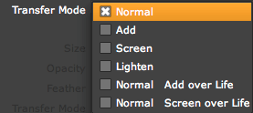

Particle tab
The Particle tab contains all the basic settings for the particles' appearance. Controls include Size, Opacity, Color and other settings which determine how these properties vary over a particle's lifespan.
We discuss the Particle Type pop-up on this page. There are four Particle groups, each explained on a separate page: Texture group, Rotation group, Glow group and Streaklet group.
The Particle tab.
Life [sec]
Life controls how long the particles live, measured in seconds. Low values give a short particle life. High values give a long particle life but mean that more particles will created over time, leading to slow rendering. When keyframing this setting, all particles born at a certain frame will get the current lifetime.
Life Random [%]
Life Random sets the randomness for Life, measured in a percentage. When the value is 0, the particles all die at once. When the value is set above 0, the particles get slightly different lifespans. Higher values mean the randomness is higher, and that particles have more variation in their lifespan. This is useful for creating natural looking effects such as trails.
Particle Type
The Particle Type is the building block of Trapcode Particular. There are 11 different types of particles. See the Particle Type page.
Particle Feather
Controls the softness of the following Particle Types: Sphere, Glow Sphere, Cloudlet and Streaklet. Grayed out for the other Particle Types.
Low Feather values give the look of sharp circles. High Feather values give a more organic, smooth look.
Left to right, Sphere Feather set low and high. Particle Type is Glow Sphere.
Size
Sets the dimensions of the particles in pixels. Higher values create larger particles. When keyframing Size, all particles born at a certain frame will get the current Size value.
Size Random [%]
Size Random sets the randomness for Size, measured in percentage. When non-zero, the particles get slightly different sizes up to the maximum size set in the Size control. Higher values means the randomness is higher, and the particles have more variation in size.
Opacity
Sets the opacity of the particles. The default is 100 percent, which makes the particles completely opaque. Low values give greater transparency. When keyframing Opacity, all particles born at a certain frame will get the current Opacity value.
Opacity Random [%]
Opacity Random sets the randomness for Opacity, measured in percentage. When the value is set above 0, the particles get slightly different transparency values. Higher values mean the randomness is higher, and particles will have more variation in their transparency.
Set Color
Set Color is the method for setting the particle's color. It is inactive when the Particle Type option is Sprite or Textured Polygon.
There are four Set Color options. Each option activates other color-related Particle controls.
Color
Color controls the particle's color. Active when Set Color is set to At Birth. There is no numeric value for Color. When keyframing Color, all particles born at a certain frame will get a certain color.
Color Random
Color Random sets the randomness for Color, as measured in a percentage. When non-zero, particles get slightly different colors. When the value is set above 0, particles get slightly different coloration. A higher value means there is more randomness, and particles will have more variation in color.
Left to right, Color set to white and green.
Left to right, Color Randomness at 0, 50, 100. Color is white.
Transfer Mode
The Transfer Mode controls how particles are composited together. These Transfer Modes are also used by the Graph Mode> Transfer Mode Over Time parameter.

There are six Transfer Mode options: